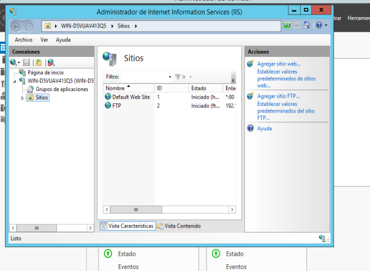
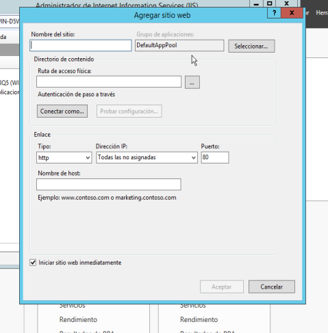
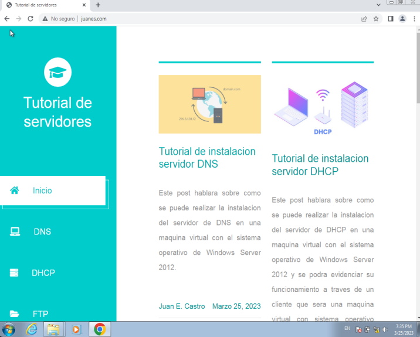
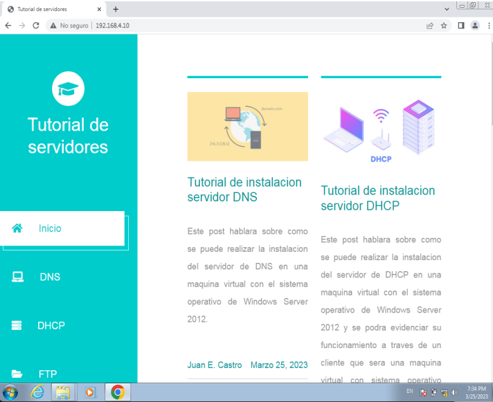

Tutorial de instalacion servidor HTTP
Marzo 25, 2023 posted por Juan E. Castro
El HTTP es el protocolo de transmisión de información de la World Wide Web, es decir, el código que se establece para que el computador solicitante y el que contiene la información solicitada puedan “hablar” un mismo idioma a la hora de transmitir información por la red.
Requisitos:
- Direccion Ip estatica
- Maquina virtual Windows Server 2012
- Maquina virtual con Window XP, 7, 8, 8.1
Paso 1: Instalacion de servidor IIS.
Se realiza la instalacion del servidor IIS a traves del Administrador del servidor en la opcion Agregar Roles y Caracteristicas.

Paso 2: Configuracion del servicio HTTP el servidor IIS.
Entramos en la configuracion del servidor IIS en la pestaña herramientas en el Administrador de Servidor.
Paso 3: Configuracion del servicio HTTP en el servidor IIS.
Damos click derecho en la carpeta sitios y escogemos la opcion Agregar sitio Web. El nombre del sitio sera el que nosotros queramos, la ruta de acceso correspondera a la ubicacion de nuestros archivos de una pagina web y por ultimo la direccion Ip sera la Ip de la maquina.
Pruebas de funcionamiento del servidor HTTP.
En el lado del cliente la prueba se realizara entrando al navegador y poner en la barra de direccion el nombre que se le coloco al sitio en la creacion del mismo, esto tambien se puede realizar ingresando la direccion Ip que se coloco en los pasos anteriores.
 